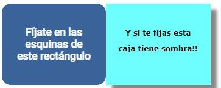

HTML es un lenguaje de marcado que se utiliza para el desarrollo de páginas sobre un navegador local o Internet. Se trata de la siglas que corresponden a HyperText Markup Language, es decir, Lenguaje de Marcas de Hipertexto”. Igual que las marcas que hacen los editores de textos se diseño con esa misma practicidad.
HTML esta formado por elementos y su anatomía es la siguiente:
La etiqueta de apertura: consiste en el nombre del elemento (en este caso, p), encerrado por paréntesis angulares (< >) de apertura y cierre. Establece dónde comienza o empieza a tener efecto el elemento —en este caso, dónde es el comienzo del párrafo—. La etiqueta de cierre: es igual que la etiqueta de apertura, excepto que incluye una barra de cierre (/) antes del nombre de la etiqueta. Establece dónde termina el elemento —en este caso dónde termina el párrafo—. El contenido: este es el contenido del elemento, que en este caso es sólo texto. El elemento: la etiqueta de apertura, más la etiqueta de cierre, más el contenido equivale al elemento.Los atributos contienen información adicional acerca del elemento, la cual no quieres que aparezca en el contenido real del elemento Un atributo debe tener siempre:
** Un espacio **entre este y el nombre del elemento (o del atributo previo, si el elemento ya posee uno o más atributos). El nombre del atributo, seguido por un signo de igual (=). Comillas de apertura y de cierre, encerrando el valor del atributo. Los atributos siempre se incluyen en la etiqueta de apertura de un elemento, nunca en la de cierre.
— El tipo de documento. Es un preámbulo requerido. Este elemento encierra todo el contenido de la página entera y, a veces, se le conoce como el elemento raíz (root element). Este elemento actúa como un contenedor de todo aquello que quieres incluir en la página HTML que no es contenido visible por los visitantes de la página Este elemento establece el juego de caracteres que tu documento usará en utf-8, que incluye casi todos los caracteres de todos los idiomas humanos.
Incrusta una imagen en la página, en la posición en que aparece. Lo logra a través del atributo src (source), el cual contiene el path (ruta o ubicación) de tu archivo de imagen. También se incluye un atributo alt (alternative) el cual contiene un texto que debería describir la imagen, y que podría ser accedido por usuarios que no pueden ver la imagen, quizás porque: Son ciegos o tienen deficiencias visuales. Los usuarios con impedimentos visuales usualmente utilizan herramientas llamadas Lectores de pantalla (Screen Readers), los cuales les leen el texto contenido en el atributo alt. Se produjo algún error en el código que impide que la imagen sea cargada. Como ejemplo, modifica deliberadamente la ubicación dentro del atributo src para que este sea incorrecto.
Los elementos de encabezado permiten especificar que ciertas partes del contenido son encabezados, o subencabezados del contenido. De la misma forma que un libro tiene un título principal, y que a su vez puede tener títulos por cada capítulo individual, y subtítulos dentro de ellos, un documento HTML puede tenerlos también. HTML posee seis niveles de encabezados, < h1>–< h6 >, aunque probablemente solo llegues a usar 3-4 como mucho.
Los elementos < p> se utilizan para encerrar párrafos de texto; los usarás frecuentemente para el marcado de contenido de texto regular.
Mucho del contenido web está dado por listas, así que HTML tiene elementos especiales para ellas. El marcado de listas se realiza siempre en al menos dos elementos. Los dos tipos de listas más comunes son las listas ordenadas y las desordenadas: Las listas desordenadas son aquellas en las que el orden de los items no es relevante, como en una lista de compras. Estas son encerradas en un elemento < ul > (unordered list). ** Las listas ordenadas **son aquellas en las que el orden sí es relevante, como en una receta. Estas son encerradas en un elemento < ol > (ordered list).
Los vínculos o enlaces son muy importantes —son los que hacen de la web, la web—. Para implementar un vínculo, necesitas usar un vínculo simple — < a> — la a es la abreviatura de la palabra inglesa «anchor» («ancla»). Para convertir algún texto dentro de un párrafo en un vínculo, sigue estos pasos:
Elige algún texto. Nosotros elegimos «Manifesto Mozilla». Encierra el texto en un elemento < a>, así: < a >Manifesto Mozilla Proporciónale al elemento < a> un atributo href, así: < a href="">Manifesto Mozilla< /a >
Completa el valor de este atributo con la dirección web con la que quieras conectar al vínculo: < a href="https://www.mozilla.org/es-AR/about/manifesto/">Manifesto Mozilla < /a> Mozilla (https://www.mozilla.org/es-AR/about/manifesto/)
Han pasado tres décadas desde que Tim Berners-Lee, conocido por ser el padre de la World Wide Web, presentase la primera página web el 20 de diciembre de 1990. Como él mismo comentó en 2019 se trataba de “una propuesta vaga, pero emocionante, por un espacio libre, abierto y sin permiso para que toda la humanidad comparta conocimientos e ideas”.
Desde entonces, la evolución de las páginas webs ha sido impresionante, no solo a nivel de diseño, usabilidad y funcionalidades, sino también a la hora del desarrollo.
Las primeras páginas web eran estáticas, es decir, un archivo de texto en el cual se especificaba el aspecto que tendrían los textos, mezclados con imágenes y enlaces a otras páginas.
Posteriormente se comenzó a incluir ese texto en una base de datos y a disponer de un lenguaje de programación con el cual recuperar la información e incluir el diseño. Este sistema era mucho más complejo pero permitía que los usuarios publicasen sus propios contenidos.
Cuando hablamos de la historia y de la evolución del diseño web, el momento inicial lo encontramos en 1990, cuando el físico Tim Berners-Lee, trabajador del CERN (Organización Europea para la Investigación Nuclear) creó la primera versión de HTML, en la que el texto dominaba el espacio.(obvio el espacio de la WEB)
Tim Berners-Lee es considerado el padre de la Web porque desarrolló sus tres pilares fundamentales:
Lenguaje HTML (HyperText Markup Language) Protocolo HTTP (HyperText Transfer Protocol) **Sistema de localización de objetos en la web URL **(Uniform Resource Locator)
2.2 El uso de las tablas dieron a la web el verdadero anclaje para poder distribuir el diseño y al día de hoy, hacerla RESPONSIVE.
El W3C Wordl Wide Web Consortium unifica los criterios y se alza con el modelado de los procesos para versionar HTML, y, unificar criterios a futuro.
A mediados de los noventa, Flash y Javascript dieron lugar a las animaciones con efectos visuales, haciendo posible resolver las limitaciones del HTML. A partir de ese momento, el problema era la larga espera que experimentaban los navegantes cuando cargaban estas páginas tan sumamente animadas.
Al rededor de 1998, se comenzó a experimentar con CSS y PHP para crear páginas webs dinámicas y de carga más rápida. En este punto fue cuando empezó el diseño web sin tablas, permitiendo lograr lo mismo con menos código, facilitando la creación y ayudando al mantenimiento de los sitios web.
La Web 2.0 llegó en 2003, con nuevas funcionalidades CSS3 y una información basada directamente en el usuario. En este periodo, las redes sociales y los blogs empezaron a hacerse más notables.
Se lanza la versión 3 de SS
En 2008 los smartphones comienzan a pedir diseño web propio y en el año 2012 se presenta el diseño web adaptable (responsive web design). Desde aquel momento, se presenta la información al usuario de una manera operativa, bajo el lema “el contenido de calidad por encima de todo”.
En la actualidad, están en alza las fuentes sencillas, los colores planos y los gráficos vectoriales, que permiten ser escalados ilimitadamente sin perder calidad.
En el futuro, ¿Cuál crees que serán los avances en diseño web? Lo que es seguro es que esta materia seguirá en constante transformación y con un progreso impredecible.
CSS3 es una tecnología que ha tenido una evolución en el tiempo, que actualmente se encuentra en su versión 3, como su propio nombre indica.
Sus siglas corresponden a “Cascading Style Sheets”, que tiene el siguiente significado:
Cascading, que significa que los estilos que aplicamos a los elementos de una página web se propagan a los elementos que contiene, se propagan en cascada.
Style, porque mediante CSS lo que hacemos es aplicar estilos visuales a los distintos elementos de nuestra página web.
Sheets, que significa hojas, porque los estilos de una página web se añaden en ficheros aparte, en ficheros con la extensión .css de manera general.
CSS ha ido evolucionando desde hace 25 años a la versión actual, que es CSS3, pero su función es la misma, sirve para dar estilos visuales a las páginas web.
El CSS permite darle formato a los objetos, textos y demas dentro de una pagina html.
Para ello se deben seguir unas reglas. identificando las partes de una estructura CSS tenemos:
Es el elemento al que se aplica la regla.
En este caso esta regla va a definir el aspecto de todos los párrafos (p) de la página. Más adelante verás que estos elementos pueden filtrarse.
Es el atributo aplicable al selector que se quiera formatear. Este caso se aplican la propiedad font-family (tipo de letra) y color del texto.
Este es el valor que se le da a la propiedad.
La regla comienza con el nombre del selector Cada declaración acaba en ; (punto y coma) El conjunto de declaraciones está encerrado entre llaves. Las reglas así definidas puedes colocarla en la página web entre etiquetas o almacenarlas en un archivo independiente que se llamará desde la página mediante un elemento.
El elemento HTML en el que comienza la regla. Esta selecciona el(los) elemento(s) a dar estilo (en este caso, los elementos < p > ). Para dar estilo a un elemento diferente, solo cambia el selector. Declaración Una sola regla como color: red; especifica a cuál de las propiedades del elemento quieres dar estilo.
Maneras en las cuales puedes dar estilo a un elemento HTML. (En este caso, color es una propiedad del elemento < p> ). En CSS, seleccionas qué propiedad quieres afectar en tu regla.
A la derecha de la propiedad, después de los dos puntos (:), tienes el valor de la propiedad.